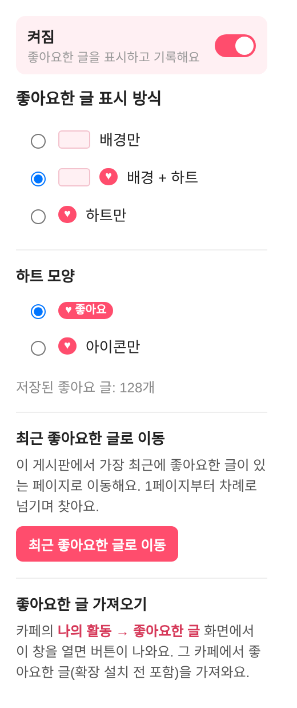

새 기능 두 가지가 추가됐어요.
저장된 좋아요 기록은 업데이트해도 그대로 유지돼요.
확장 아이콘을 눌러 나오는 창 맨 위 스위치로
확장 전체를 끄고 켤 수 있어요.
끄면 표시·좋아요 기록·가져오기·이동이 모두 멈추고,
저장된 기록은 지워지지 않아요. 다시 켜면 그대로 표시돼요.

게시판 목록에서 아이콘 창의 [최근 좋아요한 글로 이동]을 누르면,
그 게시판에서 가장 최근에 좋아요한 글이 있는
페이지까지 찾아가 그 글을 분홍 테두리로 알려 줘요.
읽다 멈춘 곳을 이어 볼 때 편해요.
다른 게시판에서 누른 좋아요는 알아서 건너뛰어요.
| 47862 | 요즘 듣는 플레이리스트 공유 |
| 47855 | 동네 맛집 지도 만들어 봤어요 |
| 47849 | 15분 스트레칭 루틴♥ 좋아요 |
| 47843 | 이사할 때 챙길 것 체크리스트 |
| 47838 | 사진 잘 찍는 구도 몇 가지 |